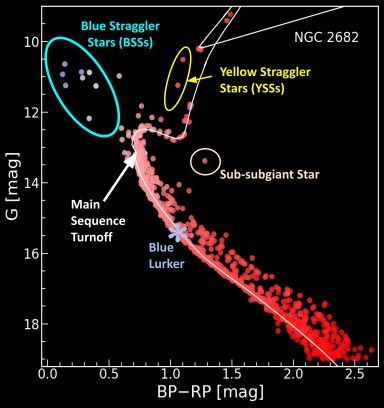

Blue stragglers, blue lurkers & yellow stragglers
Stars that appear younger than their cluster should allow — rejuvenated by mass transfer, mergers, and collisions. I characterise these populations, their hot companions, and formation pathways using multiwavelength photometry from AstroSat/UVIT and Swift/UVOT to infrared data, spectroscopy, and light-curve modelling.
Double sequences in Berkeley 17 Hot populations of Melotte 66 NGC 2506 with AstroSat/UVIT NGC 7789 with UVIT/AstroSat Blue and yellow stragglers of Berkeley 39 Blue lurker census
Proceedings NGC 7789 and NGC 2506 with UVIT Berkeley 39 with Swift/UVOT